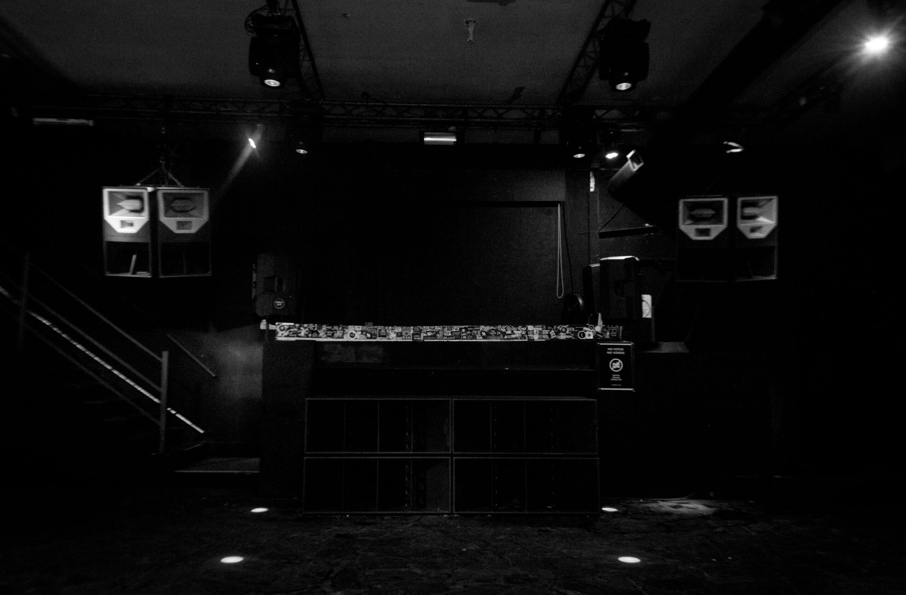

Nuestra Historia
Comienzo de algo hermoso
A tres años del comienzo de la década del 2010, una nueva generación estaba naciendo, y con ella la llegada de muchos jóvenes dispuestos a cambiar el rumbo de la escena techno local. El mítico club Cocoliche cerraba sus puertas y esta noticia dejaba sin hogar a muchos amantes de este género. El espíritu de unión, amor y libertad, se encontraba vagando por las noches a la espera de nuevas propuestas. El 4 de febrero la ciudad de Haedo, Buenos Aires, iba a ser parte del nacimiento de Under Club. Un cálido ambiente se apoderó de un pequeño sector de la discoteca Bloody, y la fidelidad de sus seguidores acompañaron los primeros pasos de su mágico e incierto camino. La independencia no se hizo esperar, y al año de vida se muda y se instala en su propia locación, situada en una de las esquinas mas emblemáticas de Palermo Hollywood. El día 28 de febrero del año 2014 abre sus puertas de la mano de Nina Kraviz, y a los pocos meses recibe la visita de Oscar Mulero, quien supo ganarse el cariño, el respeto y la admiración de toda la familia de Under Club. Acompañado de su filosofía y valores muy bien marcados, Under Club comienza a ser visitado por personas y artistas de todas partes del mundo. El 20 noviembre del año 2015, Jeff Mills encabezó el line up de un memorable evento fuera de la ciudad, el cual fue planificado y montado en tan solo 8 horas. El estadio Geba había sufrido una clausura ese mismo día por la mañana, pero esto no iba a alcanzar para impedir la presentación del legendario mago de Detroit y mucho menos para detener a las 2500 almas que fueron parte de una noche histórica. En ese mismo año el holandés Tripeo se une a la familia bajo una residencia, y al poco tiempo edita el primer disco en el sello de Under Club (UC record), el cual hoy se encuentra en tiendas de distintas partes del mundo. La visita a nuevos horizontes no se hizo esperar, y fue el norteamericano Dvs1 quien invitó a Under Club a ser parte del panel de la primer edición de su nuevo proyecto Support, Organize, Sustain, que se llevo a cabo en la ciudad de Amsterdam. Las siguientes ciudades ya fueron parte de este mágico ritual: Medellín, Pereira, Asunción, Mendoza, Córdoba, Madrid, Barcelona y Santiago de Chile, . Amor, respeto, humildad. Permiso, perdón, gracias Nuestro club, nuestro hogar.